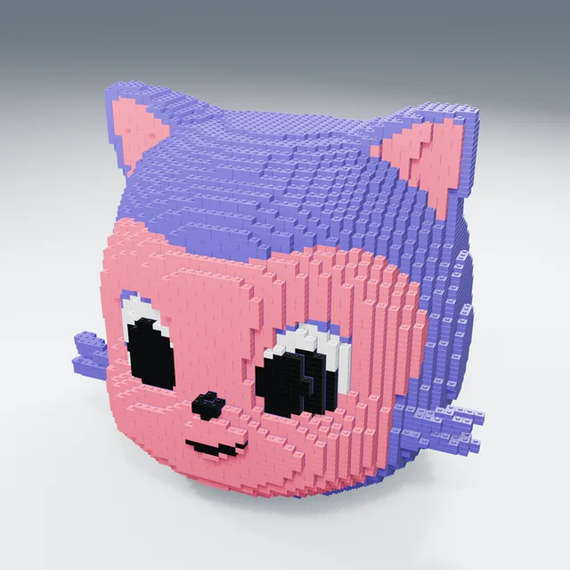
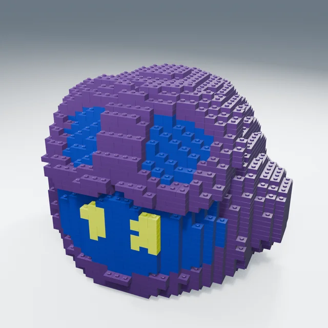
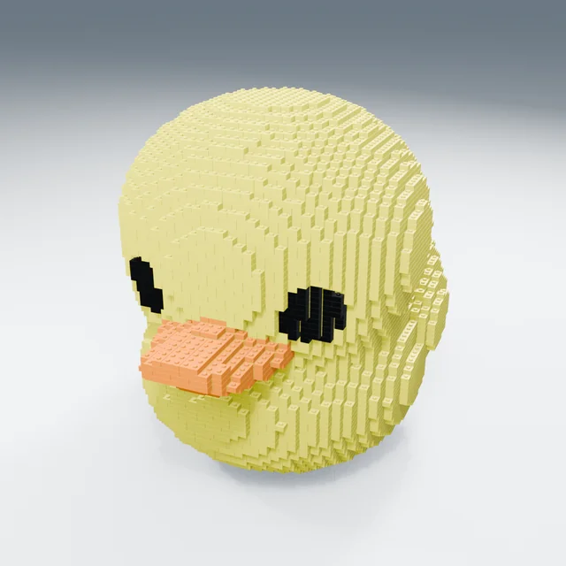

MONAr2 / 4 mm
{kind=link}

Enlarge image ＋Mona Fine / C
13,434 parts 180.71 mm
View the proposed assembly sequence and part IDs ↗Mona / Copilot / Ducky · approximately 180 mm
Build with small bricks, one at a time.
The three designs selected from nine candidates are here,
alongside the trials that did not work out.
Noncommercial reference materials based on P1S / PLA assumptions. Not a manufacturing-ready kit.

Enlarge image ＋13,434 parts 180.71 mm
View the proposed assembly sequence and part IDs ↗
Enlarge image ＋3,021 parts 183.95 mm
View the proposed assembly sequence and part IDs ↗
Enlarge image ＋10,311 parts 180.71 mm
View the proposed assembly sequence and part IDs ↗Post-selection joint prototype r2-20260919. A total of 26,766 individual instances with unique IDs share 236 native geometry types. Regrouping changed the seams; the result is not pixel-for-pixel identical to Phase1.
SELECTED / r2-20260919
Switch between the complete model, exploded view, layers, and proposed assembly sequence; click a part.
This viewer is read-only. It does not run CAD or connect to a printer.
Orbit / viewpoints / part IDs / BOM by color and type / switch between three designs
PHASE 1 / CANDIDATE MATRIX
The images and part counts used to compare detail levels at that stage.
These are kept separate from the current r2 record and from physical-fit validation results.
Loading candidate records.
Finer detail does not mean easier assembly or greater accuracy. All heights are design values.
These three videos do not show the selected Fine / Chunky designs or r2.
FILES / NATIVE + EXCHANGE
Blender, FreeCAD, STEP / STL / 3MF, placements, and BOMs.
Files are separated by revision and pitch, with sizes and SHA-256 hashes published for individual files.
Extract the ZIP before opening FreeCAD documents. Assembly FCStd documents use relative references to part libraries in the same package. Open them without changing the folder structure. All are prototypes marked NOT_SLICED.
The legacy 4 mm, 11-part files are preserved unchanged: Geometry-only 3MF / STL Do not load both files on the same plate.
 Physical feedback / 2026-09-19
Physical feedback / 2026-09-19
PHYSICAL TRIAL / ISSUES REPORTED
“Small and difficult to make”
“Holes are filled with plastic”
Finer detail alone did not make assembly easier. Follow-up feedback confirmed that the holes were already blocked before ultrasonic cleaning. The cause has not yet been identified.
Installation of a 0.2 mm nozzle was confirmed beforehand. The actual profile, layer height, material brand, and retention for each condition remain unconfirmed.
View 10 photos, videos, and the report →DESIRED PRINT OPTIONS / DISCUSSION
The requested options are “print separately, then assemble” and
“print everything at once.”
This records a future intention. CAD used for the assembly view is not treated as a one-piece printable model or print-ready data. Given the current issues, full-kit printing remains on hold.
DESIGN HISTORY / OPEN QUESTIONS
Visual detail and
the size of a part you can comfortably hold—
consider them separately.
Drawing on LEGO's stud-and-tube principle, discussion is focused on common, easier-to-handle blocks, such as 2×2, 2×4, and 1×2 forms on an approximately 8 mm pitch. Plates or similar parts would add detail. This is a proposal, not an official manufacturing tolerance.
The new design proposal has not been adopted. Exact preservation of the approximately 180 mm appearance, commercial LEGO compatibility, FDM printability, and retention cannot yet be guaranteed. No new CAD or print data was generated for this publication.
{kind=link}
{kind=link}
{kind=link}